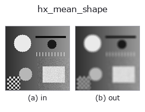

halcon_ext op• 資料種類:image → image
• 呼叫:fullseye.apply(img, "hx_mean_shape", a=0.5, b=0.5)(2-D 的模型是一張圖 + 兩個純量旋鈕 a,b∈[0,1])
• HALCON 對應:mean_image_shape(其含義與參數可參考 HALCON 手冊)

*圖為在 128×128 合成輸入上實際執行的輸出。左為輸入，右為輸出。點雲以俯視散點顯示(亮度 = z)，一維序列為折線，體資料為沿 z 的最大值投影，影片為中間影格，複數影像為振幅；無法成像的回傳值直接顯示數值。*
掃描旋鈕 a(0.1 / 0.5 / 0.9，另一旋鈕取預設):
▸ hx_mean_shape: knob a sweep (docs site)
*旋鈕 b 不改變輸出(實測: 0.1 / 0.5 / 0.9 相同)。*
換別的影像(合成場景 / 照片 / 硬幣。上排為輸入，下排為對應輸出。旋鈕取預設):
▸ hx_mean_shape: other inputs (docs site)
*第 4 欄是彩色 (H,W,3) 輸入。此運算子能正確處理顏色而不跨通道(不把顏色通道當作第三個空間軸摺積)。*
用任意遮罩(圓盤)做平均平滑。半徑 r 由 a 可變(與矩形平均是不同運算子)。
> 以下的詳細說明為原文 —— 摘要與標題已翻譯。
半径 `r の円板(xx^2+yy^2 <= r^2 を満たす画素を 1、総和で割って正規化)を ndimage.convolve(mode="reflect")`
で畳み込む。出力は入力と同形の float 配列で、値域は入力の範囲を出ない(重みの和が 1)。
• `a → 半径 r = 1 + int(a*4)(1〜5 画素、5 になるのは a=1 のときだけ)。カーネルは (2r+1)` 角の中の円板。
• `b` は未使用。
矩形窓の `mean_image` と違い方向による重みの偏りが少なく、円板半径以下の構造を等方的にぼかす。境界は鏡映で
延長するので端の暗落ちは起きない。入力検証は無く、NaN が含まれるとそのまま伝播する。
• 範例資料目錄(下載 URL / 授權) —— 2-D 用 skimage.data(BSD/公有領域)加合成圖,3-D 給出真實資料源(Stanford/PDS 等)的下載 URL。
• 運算子來歷與參考文獻 —— 該運算子族所依據的研究/方法出處。
• 演算法的正典(作者・年份)與用途見上面的族使用指南。
下面的程式已確認可以執行(與圖相同的輸入)。在 Studio 說明中，此區塊會變成按鈕，可當場載入並執行。
hx_mean_shape 0.50 0.50
▸ Load this pipeline · Load & run
• gallery2d_halcon_ext — py -3.11 examples/gallery2d_halcon_ext.py
image 作為輸入)identity · gaussian · mean_box · bilateral · unsharp · median · min_filter · max_filter
halcon_ext)hx_gen_circle · hx_gen_ellipse · hx_gen_rectangle2 · hx_gen_checker_region · hx_gen_grid_region · hx_gabor · hx_fit_surface1 · hx_fit_surface2
*Provenance: ops.py — 2D 運算子登記表。本條目由 tools/opdocs.py md 自動產生(請勿手動編輯)。*
© 2026 Kazufumi Furuse — Fullseye operator documentation. Licensed under Apache-2.0.
{kind=link}
{kind=link}